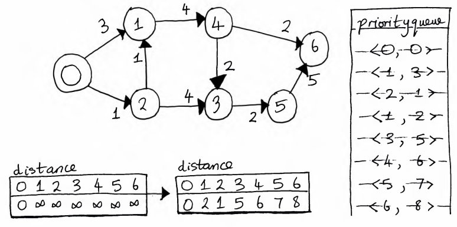

Dijkstra's Shortest Path algorithm
Motivation
In the previous section, we noted that BFS enables us to find the shortest path between a start node and other nodes, but with the caveat that the graph must have unweighted edges. Dijkstra's Single-Source Shortest Path, or SSSP, algorithm mostly solves this problem.
It's "mostly" because there's a caveat here too: the graph edges must have non-negative weights. The reason for this is that the algorithm uses a technique called "relaxation" to eagerly find the next most promising edge to traverse. Let's see how this works.
The main idea
Given an undirected graph with non-negative edge weights, Dijkstra's algorithm does the following:
-
It creates a
distancearray to store the shortest distance from the start node to each other node in the graph. - It sets the initial distance to each other node from the start node to postive infinity. The start node has an initial distance of 0, since it is itself.
- It maintains a priority queue of key-value pairs, where the key is a node index and the value is the current shortest distance from the starting node to the node represented by the key.
- It traverses the graph from the starting node, visiting nodes in turn by polling the priority queue and adding key-value pairs to the priority queue for unvisited nodes.
- If the algorithm finds a shorter path from the start node to a given node, it "relaxes" the edge, by updating the value for the node in the distance array.
- The algorithm continues like this until the queue is empty.
A slight modification of the base algorithm can be used to construct the shortest path from the starting node to all other nodes that are reachable from it in the graph.
Let's look at an example.
Consider the graph above. We'll run Dijkstra's algorithm from node 0.
- First, the algorithm initialises an array which stores the initial distance from 0 to all other nodes. The distance to all other nodes is set to positive infinity.
-
Then the algorithm creates a priority queue and enqueues the key-value pair
<0, 0>. Then it dequeues it. -
Node 0 has two neighbours, 1 and 2. Suppose the algorithm chooses 1 first. The current shortest
distance to node 1 is positive infinity. However, the sum of the current shortest distance
to node 0 and the cost of the edge from 0 to 1 is
. Since 3 is less than positive infinity, the value at index 1 of the distance array is
updated from positive infinity to 3, and the key-value pair
<1, 3>is enqueued. -
A similar step is executed for the other neighbour of node 0, node 2. The shortest distance
from 0 to 2 is updated from positive infinity to 1, and the key-value pair
<2, 1>is enqueued. -
Next, the algorithm dequeues the key-value pair with the smallest value:
<2, 1>. Node 2 has two unvisited neighbours: 1 and 3. -
The cost of the shortest path from 0 to 1 through 2 is 2, which is less than
the current shortest path to 1. So the current shortest path to 1 is updated and the key-value pair
<1, 2>is enqueued. Similarly, the cost of the shortest path from 0 to 3 is updated from positive infinity to 5 and the key-value pair<3, 5>is enqueued. -
Next, the algorithm dequeues the key-value pair
<1, 2>. Node 1 has a single unvisited neighbour, node 4. The shortest distance from 0 to 4 is updated to 6 and the key-value pair<4, 6>is enqueued. -
The algorithm then dequeues the key-value pair
<1, 3>. Since the value is greater than the current shortest distance to node 1 (which is 2), nothing is done with this key-value pair. -
The algorithm dequeues the pair
<3, 5>. Node 3 has a single unvisited neighbour, node 5. The shortest distance to 5 is updated from positive infinity to 7 and the pair<5, 7>is enqueued. -
The pair
<4, 6>is dequeued next. Node 4 has a single unvisited neighbour, node 6. The shortest distance to 6 is updated from positive infinity to 8, and the pair<6, 8>is enqueued. -
The algorithm dequeues the pair
<5, 7>. Node 5 has a single unvisited neighbour, node 6. However the sum of the shortest distance to 5 and the cost of the edge from 5 to 6 is greater than the current shortest distance to 6. So no update occurs. -
Finally, the algorithm dequeues
<6, 8>. Node 6 has no neighbours and the algorithm terminates.
Code time
We begin the implementation of the algorithm with
a helper Edge class.
It's similar to the one we used for DFS and BFS, except that it has a
cost field that represents the weight of the edge.
import java.util.ArrayList;
import java.util.Collections;
import java.util.Comparator;
import java.util.List;
import java.util.PriorityQueue;
public class DijkstrasShortestPath {
private Integer[] previous;
private static class Edge {
private int fromNode, toNode, cost;
public Edge(int fromNode, int toNode, int cost) {
this.fromNode = fromNode;
this.toNode = toNode;
this.cost = cost;
}
}
}For the sake of simplicity, I assume that edge weights are integers, but in your implementation, feel free to allow real numbers.
The previous array will be used to construct the shortest path from the
start node to all other reachable nodes in the graph.
Next up, we have a Node helper class which is used to represent the
key-value pairs that are stored in the priority queue. We also create a
Comparator comparison function which the priority queue will use to
compare nodes when Dijkstra's algorithm polls it for the next most promising node.
private static class Node {
private int id, value;
public Node(int id, int value) {
this.id = id;
this.value = value;
}
}
private Comparator<Node> nodeComparator = new Comparator<>() {
@Override
public int compare(Node node1, Node node2) {
if (node1.value == node2.value) return 0;
return node1.value < node2.value ? -1 : 1;
}
};Next up is Dijkstra's algorithm itself. It might seem a bit more complex than DFS and BFS, which it is, but when broken down it's relatively straightforward.
public double[] dijkstra(List<List<Edge>> graph, int start) {
if (start < 0 || start >= graph.size()) {
throw new IllegalArgumentException("Start node index is invalid; got: " + start);
}
int v = graph.size();
previous = new Integer[v];
boolean[] visited = new boolean[v];
double[] distance = new double[v];
for (int i = 0; i < v; i++) {
distance[i] = (i == start ? 0 : Double.POSITIVE_INFINITY);
}
PriorityQueue<Node> queue = new PriorityQueue<>(nodeComparator);
queue.offer(new Node(start, 0));
Node node;
while (!queue.isEmpty()) {
node = queue.poll();
if (node.value > distance[node.id]) continue;
for (Edge edge : graph.get(node.id)) {
if (!visited[edge.toNode]) {
int newDistance = node.value + edge.cost;
if (newDistance < distance[edge.toNode]) {
previous[edge.toNode] = edge.fromNode;
distance[edge.toNode] = newDistance;
queue.offer(new Node(edge.toNode, newDistance));
}
}
}
visited[node.id] = true;
}
return distance;
}We finish up with the code to construct the shortest path from the starting node to all other nodes that are reachable from it. First, it runs Dijkstra's algorithm. Then it loops through the nodes in the graph (we assume that the graph nodes are labelled from to , where is the number of nodes). For each node, the loop constructs the path from the node to the starting node, reverses the path and then adds the path to a list of paths which the function eventually returns.
public List<List<Integer>> constructShortestPaths(List<List<Edge>> graph, int start) {
if (start < 0 || start >= graph.size()) {
throw new IllegalArgumentException("Start node index is invalid; got: " + start);
}
double[] distance = dijkstra(graph, start);
List<List<Integer>> paths = new ArrayList<>(graph.size());
for (int i = 0; i < graph.size(); i++) {
if (i == start || distance[i] == Double.POSITIVE_INFINITY) {
paths.set(i, new ArrayList<>());
continue;
}
List<Integer> path = new ArrayList<>();
path.add(i);
int node = i;
while (previous[node] != null) {
path.add(previous[node]);
node = previous[node];
}
Collections.reverse(path);
paths.set(i, path);
}
return paths;
}Complexity analysis
Nice one. So that's Dijkstra's algorithm. What's its time complexity? Well, this depends on a few things.
Unlike BFS and DFS, we have a priority queue as well as the main
while loop. If the priority queue is implemented using a
binary heap, then the
offer() and poll()
operations both have a
running time, where
is the number of elements currently in the priority queue.
There'll be
poll() operations, where is the number of
nodes in the graph. In our implementation, it's possible that more than one
Node object will be put into the priority queue for a given graph node,
but this doesn't affect the order result.
The body of the for loop inside the
while loop will execute exactly times,
where is the number of edges in the graph (we're assuming that each node is
reachable from the start node, which will give us the worst case). Since the
offer() operation inside this
for loop is
, when we add everything up, we get a total running time of
.
And space complexity? Well, building a binary heap-based priority queue will require space. So will maintaining the various arrays the algorithm uses. So that will be the space complexity.
There are a few optimisations available, though. We won't dive into them here, but feel free to do so on your own. One improvement is to use an indexed priority queue instead of a priority queue. This will allow us to update the value of a given key-value pair in constant time, instead of having to offer a new key-value pair in logarithmic time.
A more substantial optimisation is to use a Fibonacci heap to implement the priority queue. This gives a running time of . I think you'll find the details and proofs behind this fascinating. If you're interested, check out Introduction to Algorithms, Third Edition.
Key takeaways
There we have it! An algorithm which enables us to find the shortest path from any two nodes in an undirected or directed graph with non-negative edge weights. The implementation we've looked at has a running time that can be improved on by using more sophisticated binary heap implementations. Regardless, it's a pretty cool algorithm!
By the way, if you don't know much about Edsger Dijkstra, it's worth checking him out. And if you like getting the facts from the source, check out the original paper on Dijkstra's algorithm.